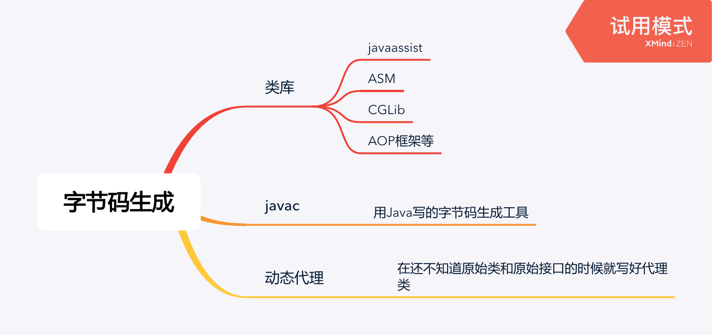

大纲
类库：
- javaassist
- ASM
- CGLib
- AOP框架等
javac：用Java写的字节码生成工具
动态代理：在还不知道原始类和原始接口的时候就写好代理类
例子
例子代码，在原始逻辑之前打印”welcome”：
public class DynamicProxyTest {
interface IHello {
void sayHello();
}
static class Hello implements IHello {
@Override
public void sayHello() {
System.out.println("hello world");
}
}
static class DynamicProxy implements InvocationHandler {
Object originObj;
Object bind(Object originObj) {
this.originObj = originObj;
return Proxy.newProxyInstance(originObj.getClass().getClassLoader(),
originObj.getClass().getInterfaces(),
this);
}
@Override
public Object invoke(Object proxy, Method method, Object[] args) throws Throwable {
System.out.println("welcome");
return method.invoke(originObj, args);
}
}
public static void main(String[] args) {
IHello hello = (IHello) new DynamicProxy().bind(new Hello());
hello.sayHello();
}
}Proxy.newProxyInstance会生成含有字节码的byte[]，系统属性-Dsun.misc.ProxyGenerator.saveGeneratedFiles=true可以得到class文件。反编译后结果（摘选）：
public class class $Proxy0 extends Proxy implements DynamicProxyTest.IHello {
private static Method m3;
// method m2, method m1;
public $Proxy0(InvocationHandler paramInvocationHandler) {
super(paramInvocationHandler);
}
public final void sayHello() {
try {
// this.h 就是我们自己实现的InvocationHandler
this.h.invoke(this, m3, null);
return;
} catch (...) {
// 略
}
}
static {
try {
m3 = Class.forName("DynamicProxyTest$IHello").getMethod("sayHello", new Class[0]);
m1 = Class.forName("java.lang.Object").getMethod("equals", Class.forName("java.lang.Object"));
...
}
}
}